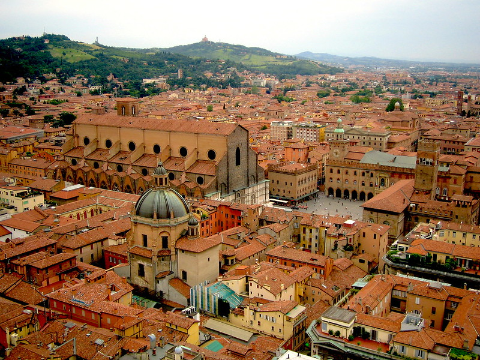

About Bologna, Italy

Welcome to Bologna!
Located in the heart of Italy, Bologna is a city with a rich historical and cultural heritage. Known for its well-preserved medieval architecture, extensive porticoed walkways (over 40 kilometers now recognized as UNESCO World Heritage, which means you will rarely need an umbrella to go around!), and its historic university, Bologna has long been a hub of learning and progressive thought. It has always been a non-conformist and pleasure-loving city, and for this reason it gained the nickname la dotta, la grassa, la rossa. Bologna is la dotta (the erudite) because it is home to the oldest university in the Western world, which dates back to 1088. It is la grassa (the fat) for its generous cuisine (tagliatelle, ragù, lasagne, they all come from here!) and la rossa (the red) for the colour of the roofs of its buildings and for its political left-wing leanings.
Conference venue
Palazzo Malvezzi, Via Zamboni 22, Bologna, Italy
Getting there
The airport “Guglielmo Marconi” is located at 15-20 minutes by car from the city centre. A direct train, Marconi Express, leaves regularly from the Airport for Bologna Central Rail Station. The trip costs 12.8€. A taxi costs about 20€ (call a taxi at 0039 051 372727). If you are coming by train, the Bologna central station is very well connected and on the main high-speed train line. You have high-speed trains to Milan and Rome every 15-20 minutes. There are 2 main train companies operating: Trenitalia and Italo They both offer discount rates if you book in advance.
Going around
Bologna is a medium-sized city. If you are staying in the city centre you can get anywhere in the centre within 20-30 minutes walking. Buses are also available and you can pay your ticket with a contactless credit/debit card. There is also a deckless bike service offered by Ridemovi, but you need to download an app to use it.
Visa information
Participants who require a visa to enter Italy are encouraged to consult the official website of the Italian Ministry of Foreign Affairs or contact the nearest Italian consulate or embassy well in advance. Visa processing times can vary, so early application is strongly recommended. If you need an official invitation letter for visa purposes, please contact the conference organizers, who will be happy to assist.